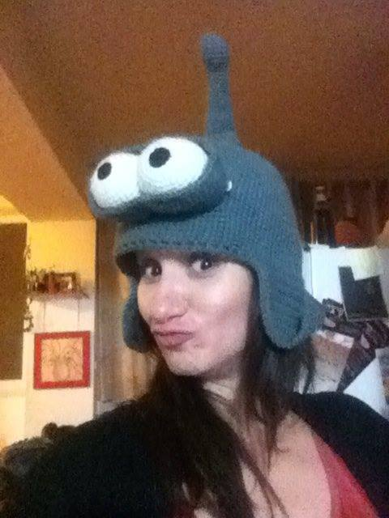
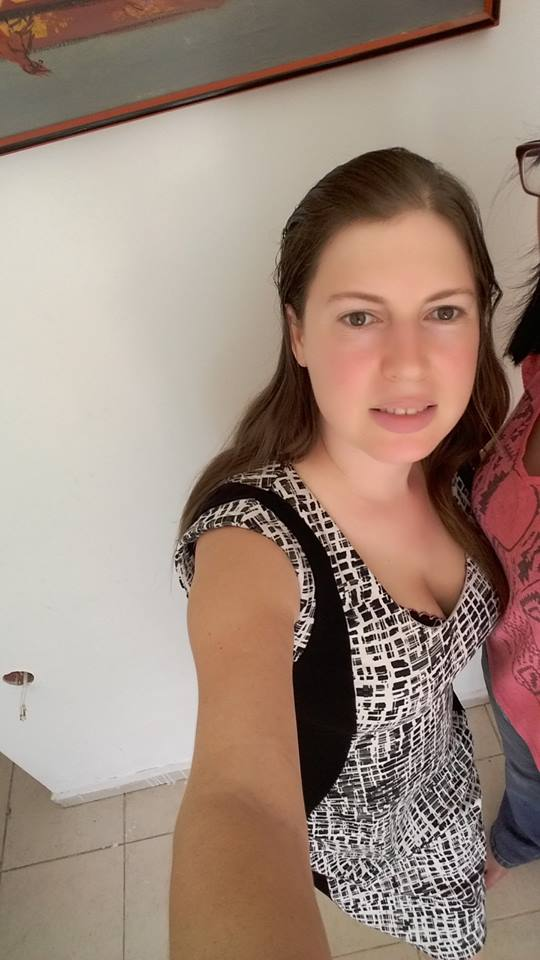

Get inspired
Orit Ophir: 'If it has no deadline - it's just dead'"
 Luda Fux: 'It doesn't matter what you are interested in, games, animals, photography, cars, planes, fashion ext. You can invent an interesting aplication for every field. Code is like play dough in the hands of a programmer, it allows you to create almost anything'>
Ruth Polachek:"Do it for the sake of doing, it's fun! mainly enjoy creating and programming in a community with girl-friends" >
lea polachek >
Rony Jacobson Levi >
/*the contributer's picture will fade on click
and her quate apears while the picture becomes a background?*/